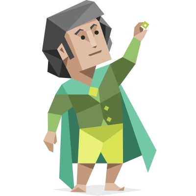
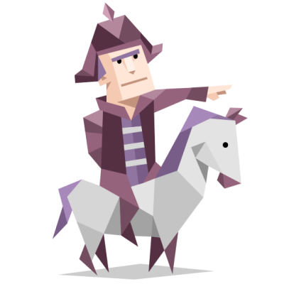
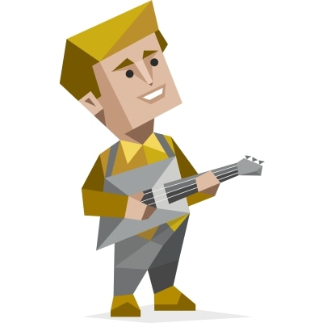
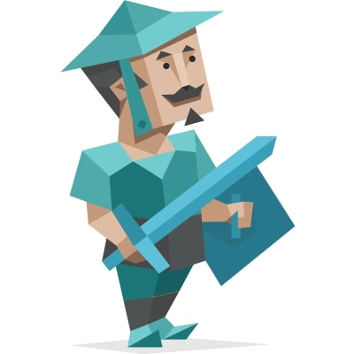

Student ID: s3954906
Email: s3954906@student.rmit.edu.au
My Profile: https://jackd1992.github.io/IIT_Assignment1.github.io/index.html
Hailing from Melbourne, with an Australian/New Zealand background, I have worked in retail management for the last 7 years. I am a ‘Jack-of-all-trades’ as they say and enjoy many hobbies, such as reading, gaming, painting, and cross stitch. My IT background is limited to a course in computer repair back in 2013 and some self-taught IT trouble shooting along the way.
Team Name
Cloud 11
Personal Information
Student ID: s3940017
Email: S3940017@student.rmit.edu.au
My Profile: https://github.com/whey2g
Born and raised in Melbourne, Victoria. I am 28 and currently work as a cabinet maker but looking to shift my career into Cyber Security. I have a basic understanding of computer systems but want to further my knowledge by obtaining a Bachelor of IT. When I am not at work or in the gym, I am either binge watching anime or playing video games such as Apex Legends, Warzone, League of Legends and TFT.
Student ID: s3939997
Email: s3939997@rmit.edu.au
My Profile: https://s3939997.github.io/Assessment_1/
I was born and raised in Victoria Australia. My mother's side is from England and my father's side is from Poland. I graduated from Carey Grammar School in 2015. I love playing Dungeons and Dragons, Path of Exile and building computers.

Student ID: S3956849
Email: S3956849@student.rmit.edu.au
My Profile: https://myprofile-mason.nicepage.io/Home.html
My name is Mason Jeffrey, and I’ve recently graduated from high school. I live in a suburb called Berowra, just North of Sydney. I am of Italian and Scottish descent. Throughout high school I have competed at nationals in middle distance running events – 1500m, 5000m, and 10’000m.

Student ID: S3957130
Email: S3957130@student.rmit.edu.au
My Profile: https://parracloud.github.io/
I am a first generation Australian born in Perth, WA. Both of my parents were born in Spain and migrated to Australia approximately 40 years ago. I enjoy eating Ramen so much that it is noteworthy of being a hobby of mine to eat it. I also enjoy good tv shows, anime and PC gaming. I have obtained a Diploma in IT Networking and have worked at a Managed Services Provider for roughly 1.5 years as a service desk technician and field technician.

Student ID: s3956855
Email: s3956855@student.rmit.edu.au
My Profile: https://jwestbot.github.io/COSC2196_My_Profile/
My father migrated from England with his parents and siblings when he was still a teenager, my mother was born in Australia with her paternal lineage migrating from England in the early 1800’s as a tradesperson. I was born in Northern NSW and grew up in the NSW high country of the New England region. I’m also a musician, songwriter and producer. I release electro pop music under my own name Jay Westfold, minimal ambient techno under the name Broken Ballerina, and play synths in a post-punk band. To date my music has received over 50k streams on Spotify and Apple Music.

Team Profile
The individual results of our tests show that our personalities vary quite a lot, but as the graphs below show – the Cloud 11 group members balanced each other out. This gave us confidence that we would be able to complement each other’s strengths and weaknesses for the different requirements in the group assessment.
Test Outcomes
For the MBTI results, the strongest traits in our results were our Assertiveness (identity), Judging (tactics) and Feeling (nature) traits.
- Averaging higher in assertive was comforting as it would be to our benefit as busy individuals to remain confident in our assessment challenges.
- Averaging higher in Judging is another great advantage as a trait which desires to be well-planned and on schedule.
- Averaging higher in Feeling is a big advantage as we all want each other to succeed and do well, quickly establishing trust in one another despite our boundaries being remote and in different time zones.

The Big Five personality trait results showed our group had high Openness, above average Conscientiousness, Extraversion and Agreeableness and average Neuroticism.
- High openness works well in group settings as we are individually able to bring unique perspectives to the table.
- Above average conscientiousness is advantageous for the group as the members are more accountable for themselves and each other.
- Above average extraversion is welcomed as we break straight through any discomfort or awkwardness with one another from the get-go, getting straight into meaningful conversation.
- Above average agreeableness is also an excellent trait for a group as the group can synergize and work together, aware of each other’s differences.

The Matrix Learning Style test results showed that the group prefers to learn in 3 out of the 7 possible learning styles. Solitary, Logical and Physical learning.
- Solitary – half of the group (3 members) preferred to work alone as their learning style. As several group members had this in common, we can understand each other’s needs in approaching the work required to be done.
- Physical – one member of the group is a physical learner, who is great for when we are engaging together as a group. Having a physical learner in the group is great for initiating the group in tasks.
- Logical – two members of the group preferred to use logic in learning. This can help bridge the group together between the solitary and physical learners as they are effective in solitary and physical learning styles where needed.

Group Processes
Insert content here.
How well did your group work together in Assignment 2? Will you be introducing any changes in process for Assignment 3? This is new for this assignment.